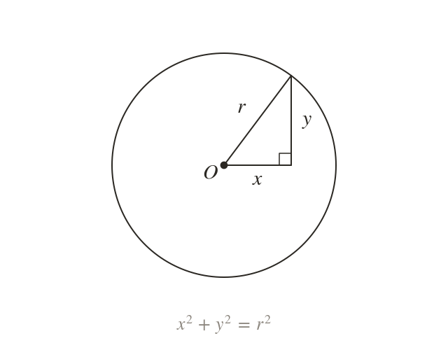

A circle from Pythagoras
is a circle centred on the origin. Every point on it is from the origin, by Pythagoras.
is a circle centred on the origin with radius It follows from Pythagoras, since every point on the circle is exactly away from the origin.